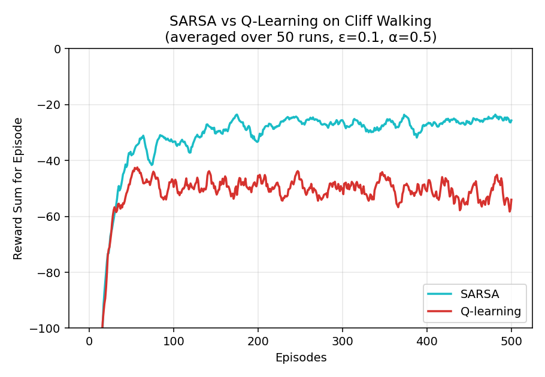
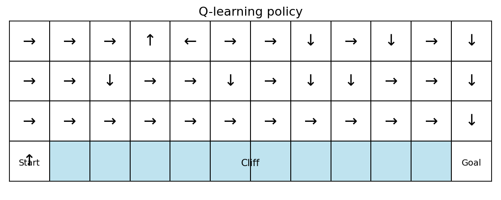
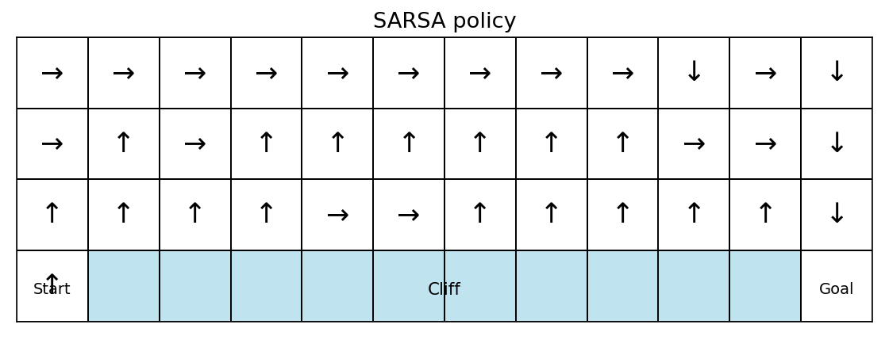
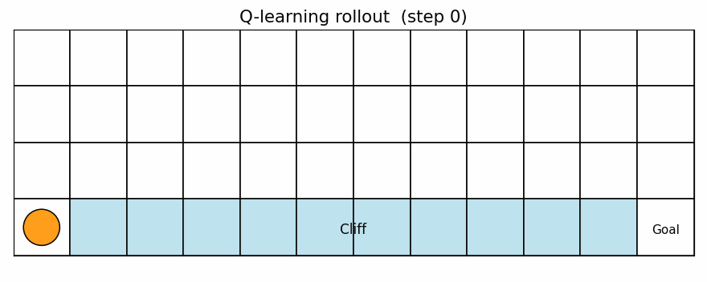
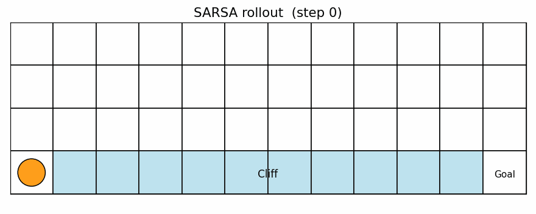

Cliff Walking — Q-learning 與 SARSA 比較
DRL 作業 2 · 在 4×12 Sutton & Barto 懸崖行走格子世界上進行表格式強化學習。
一、學習曲線

二、最終貪婪策略


三、動畫展示（Live Rollout）


四、結果摘要
| 方法 | 最後 50 回合平均獎勵 | 路徑形狀 | 風險特性 |
|---|---|---|---|
| Q-learning（離策略） | ≈ −52 | 沿懸崖邊（第 2 列） | 理論最優貪婪策略，訓練中 ε 探索會把 agent 推下懸崖 |
| SARSA（同策略） | ≈ −25 | 從頂端繞遠路 | 把 ε-探索的風險納入估計，學到較安全的路徑 |
五、重點觀察
- 收斂速度：兩者都在前 ~80 回合完成主要學習，之後進入穩定期。
- 穩定性：Q-learning 回合獎勵波動明顯較大（一次踩崖就抹平許多正常步的獎勵）；SARSA 的回合獎勵分布較緊湊。
- 何時選 Q-learning：部署時會把探索關掉（ε=0），只在乎漸近最優路徑的情境。
- 何時選 SARSA：部署時仍保留探索、或單次失誤成本極高的情境（例如實體機器人、安全控制）。